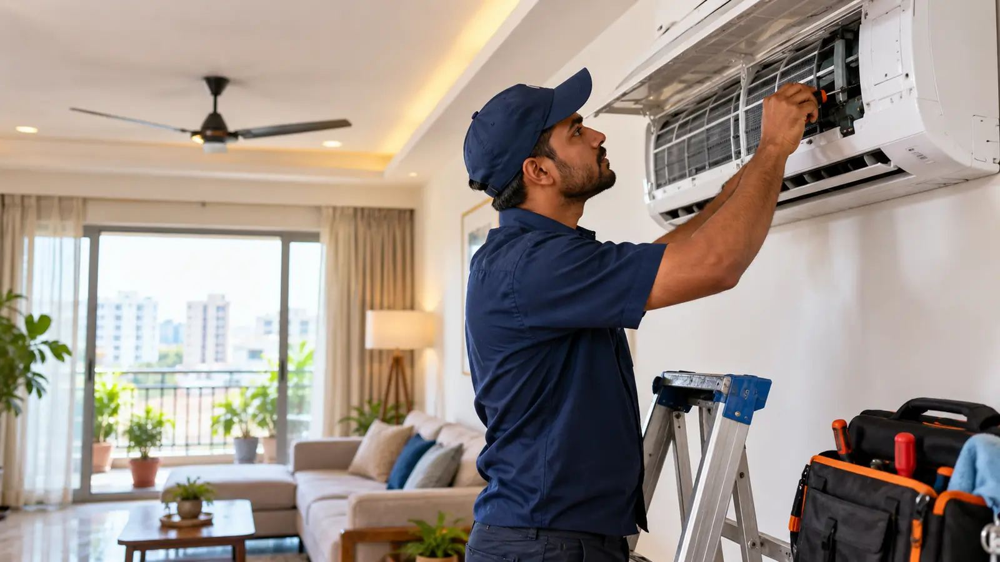
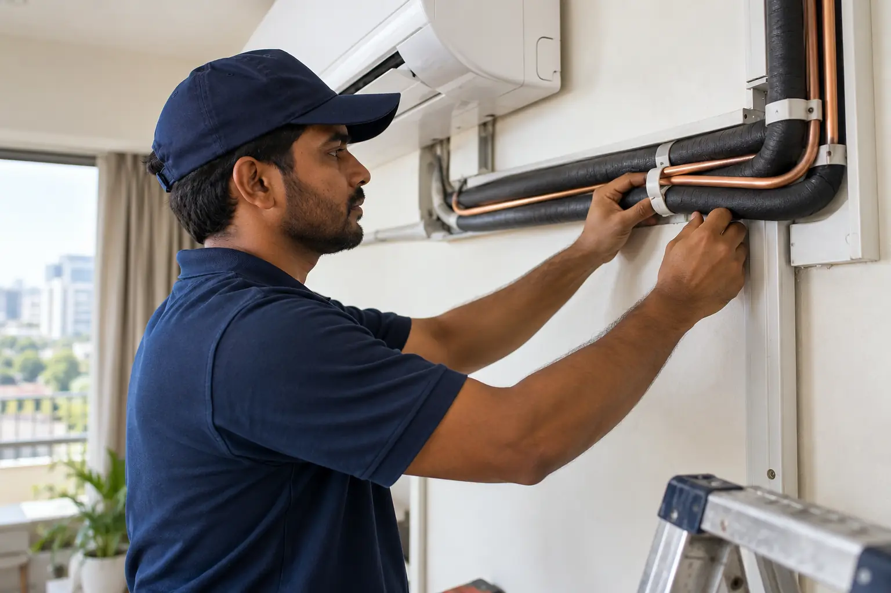
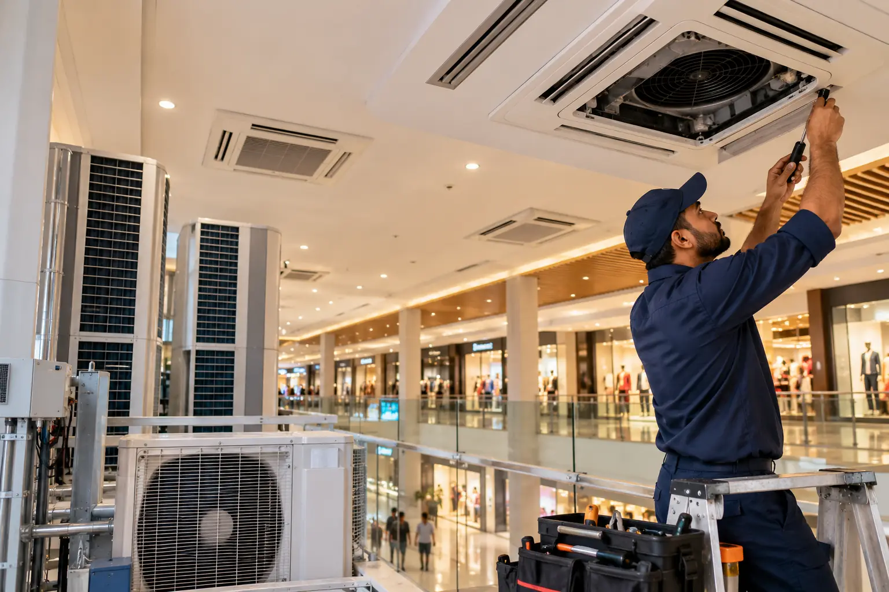
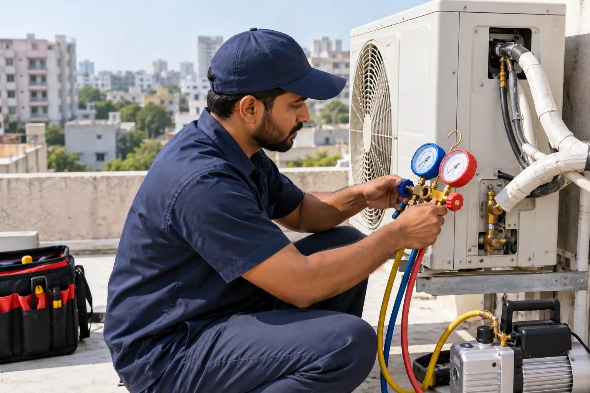
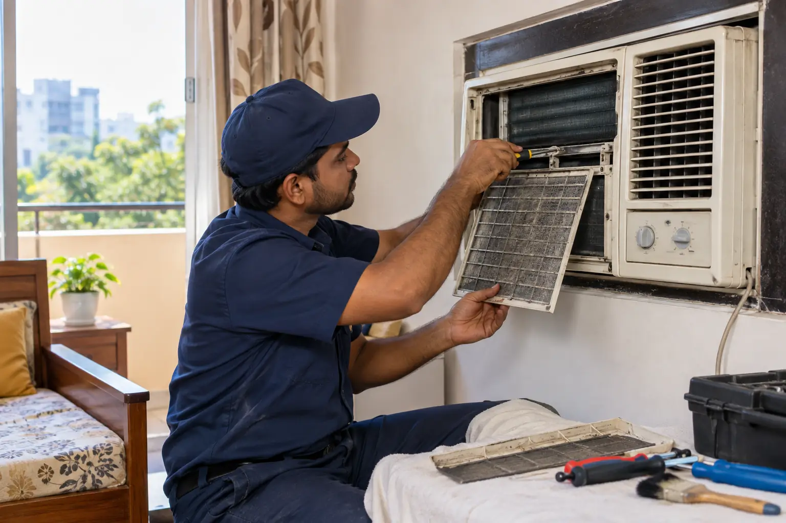

1
AC repair
Fault inspection, PCB, compressor and coil repair for major AC types.
View service →Hafeez Baba Nagar · Hyderabad · Telangana
Cooling Expert handles AC repair, servicing, installation, gas charging, jet pump cleaning, piping, PCB work and commercial cooling projects across Hyderabad and Telangana.

Representative image · generated original.
Core services
Choose the service you need, check the published rate, then call or WhatsApp. Inspection helps confirm the work before repair.
Fault inspection, PCB, compressor and coil repair for major AC types.
View service →Split, window, tower and cassette installation and re-installation.
View service →High-pressure deep cleaning for stronger airflow and cleaner coils.
View service →R22, R32 and R410A charging with vacuum and nitrogen leak testing.
View service →Split and heavy tower/cassette copper piping with labour and complete options.
View service →Maintenance support for homes, shops and showrooms.
View service →Inverter split, tower and cassette PCB repair with 3-month warranty on PCB repairs.
View service →In-house team capability for malls, showrooms and large sites.
View service →Why Cooling Expert
Cooling Expert’s service story is built around the work volume and technical scope supplied for this website—not invented testimonials or ratings.
AC work from 2014 through 2026.
Completed across residential and commercial work.
Applies specifically to PCB repairs.
Stated trust point, with clean workmanship.
Brands
Process
Share locality, AC type and issue.
Testing and fault inspection confirms the problem.
Complete the agreed repair, service or installation.
For PCB repairs, the stated 3-month warranty applies.
Selected work locations

Installation, jet service and copper piping.
Representative image.

TMC showroom AC AMC.
Representative image.

Daikin AC repair.
Representative image.
Copper piping and fitting, Mitsubishi.
Representative image.

Daikin AC fitting.
Representative image.

LG AC service and fitting.
Representative image.
Coverage
AEO answers
Our published rates are shown on this page and on the full pricing page. The final quote depends on the AC type and the work confirmed after inspection.
Call +91 85200 52291 or use WhatsApp. Share your locality, AC type and the issue so Cooling Expert can discuss the visit.
Cooling Expert services new and old ACs across LG, Daikin, Blue Star, Carrier, Godrej, O General, Mitsubishi, Videocon and Onida.
Yes. Cooling Expert serves Hyderabad localities, with the business based in Hafeez Baba Nagar.
Yes. Cooling Expert states service coverage across Telangana, including Warangal, Karimnagar, Nizamabad, Khammam, Nalgonda, Mahbubnagar, Ramagundam, Siddipet and Adilabad.
Testing and fault inspection is ₹300. If repair is completed, the inspection amount is adjustable/free in the final bill.
A 3-month warranty applies to PCB repairs. The stated warranty does not extend to other services.
Cooling Expert states that 100% genuine spare parts are used, with clean workmanship.